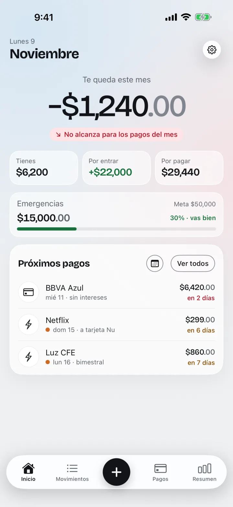
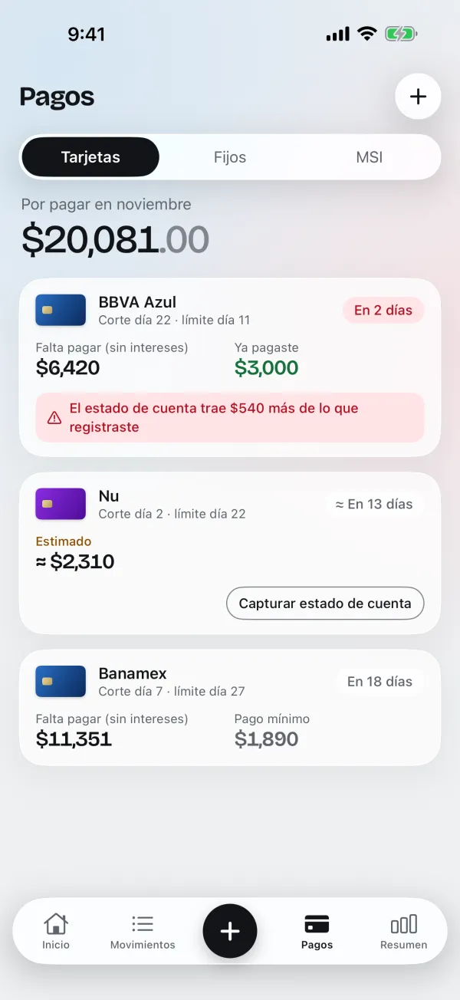
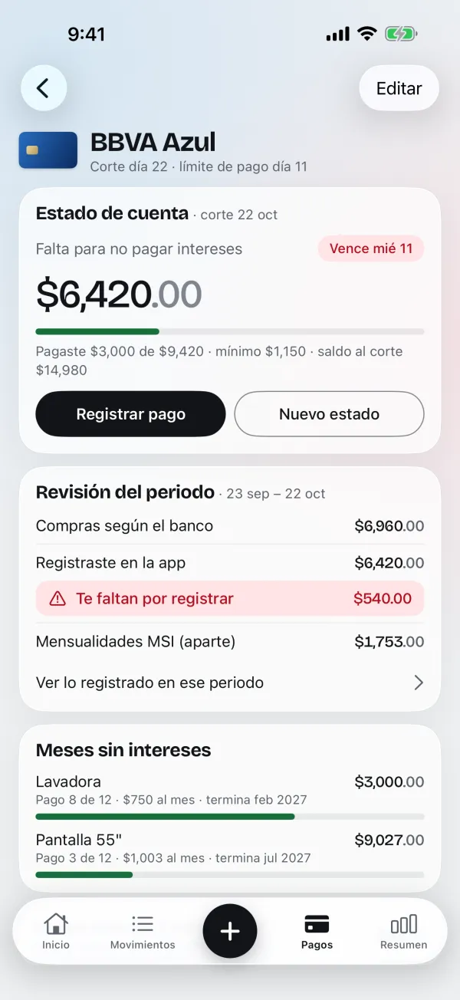
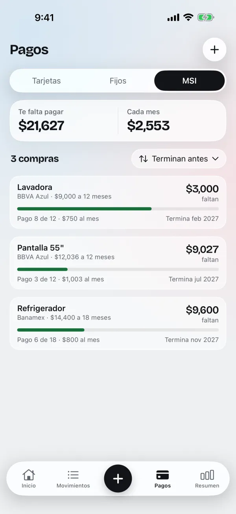
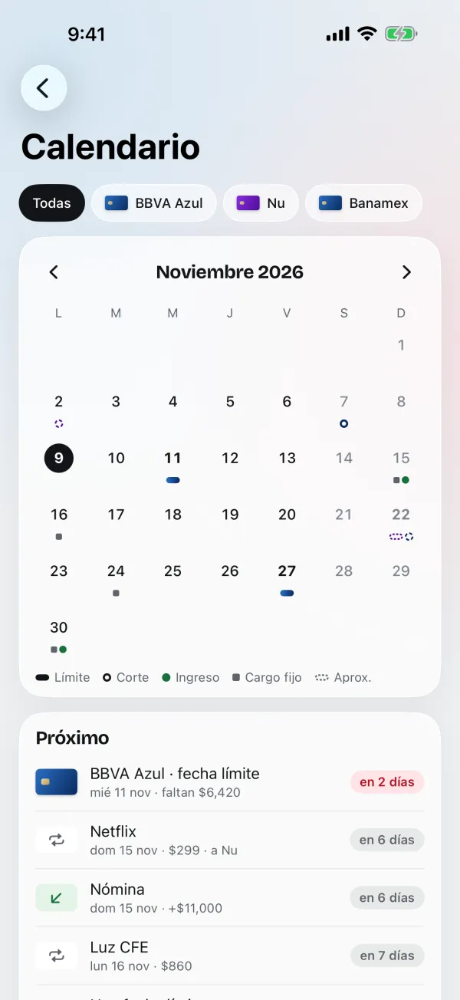
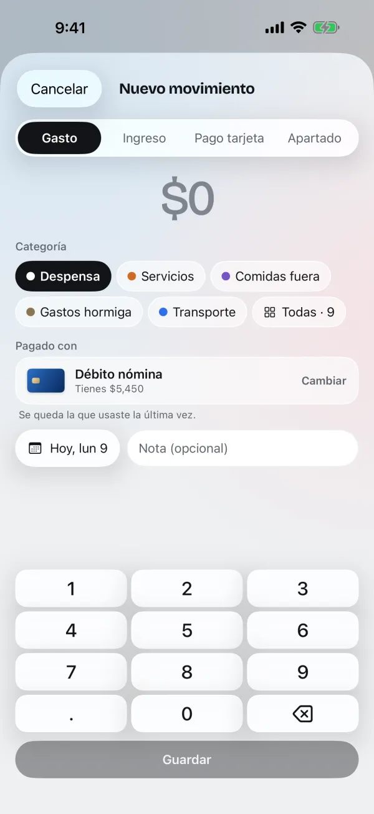
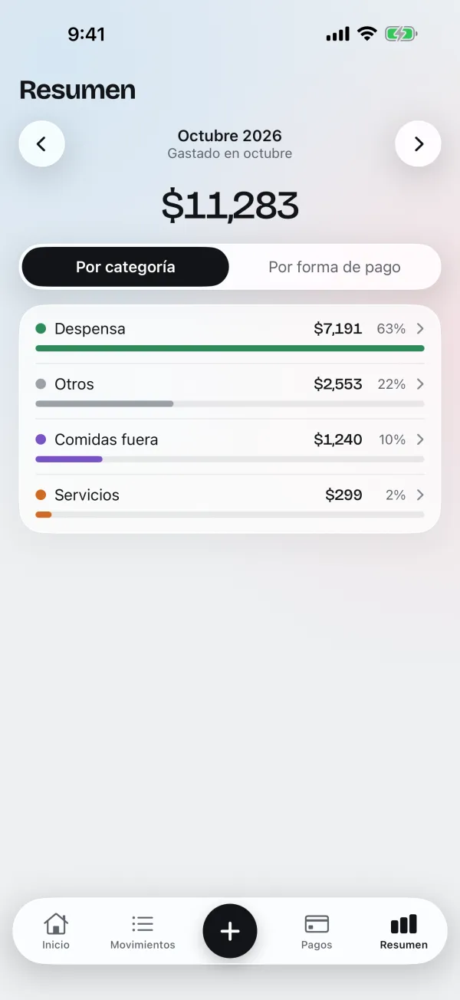
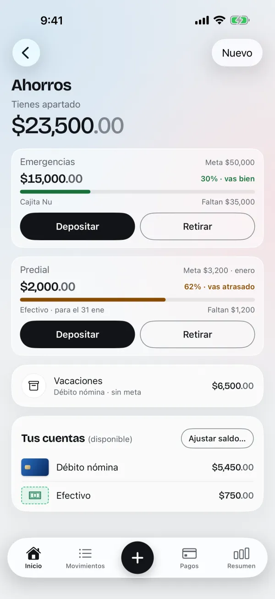
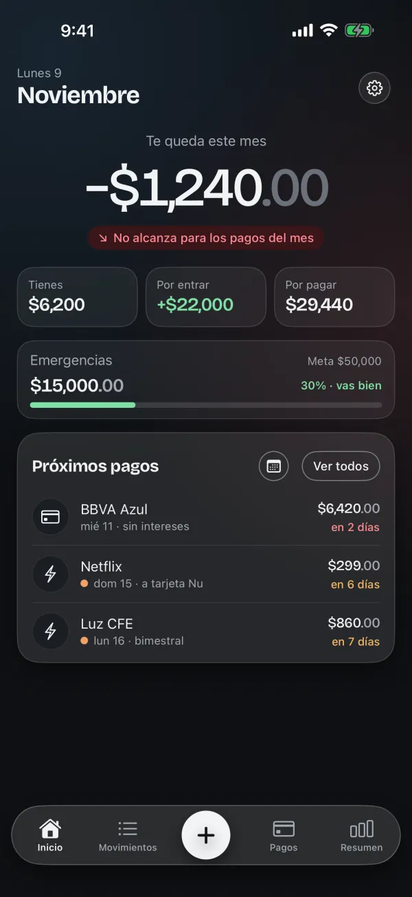

App para iPhone · Hecha en México
Sabe cuánto te queda antes del corte.
Tus gastos, tarjetas de crédito, meses sin intereses y pagos fijos en un solo lugar. Al Corte te dice cuánto dinero te queda de verdad y qué tienes que pagar pronto.
- Gratis
- Sin anuncios
- Sin crear cuenta

La pregunta de cada mes: ¿me alcanza?
Al Corte suma lo que tienes y lo que te va a entrar, le resta lo que ya debes (tarjetas, cargos fijos y meses sin intereses) y te da un solo número.
Ejemplo con datos inventados.
Mira la app por dentro
Sin descargar nada. Arrastra o usa las flechas.
-

-

-

-

-

-

-

-

Y además
- Lee tu estado de cuenta Elige el PDF que te manda el banco y la app llena los datos. Lo que no pueda leer lo capturas a mano.
- Te avisa antes de pagar Recordatorios antes de cada fecha límite y cada cargo fijo.
- Tus datos son tuyos No conecta tu banco ni te pide cuenta. Todo vive en tu iPhone y en tu iCloud.
- Bloqueo con Face ID Si quieres, nadie más abre la app.
- Respaldo en tu iCloud Si cambias de iPhone, tus datos te siguen.
- Sin anuncios Ni anuncios, ni rastreo, ni funciones de pago.
Por qué existe
Al Corte empezó como una nota en el celular: la fecha de corte de cada tarjeta, la fecha límite y cuánto debía en cada una. Servía para no atrasarme, pero no me decía lo más importante: a dónde se iba el dinero y si me iba a alcanzar.
Quería abrir algo y saber, en un segundo, cuánto me queda este mes y qué tengo que pagar pronto. Así nació Al Corte.
- Un número primero. Lo que importa es cuánto te queda; todo lo demás es el desglose.
- Pensada para México. Fechas de corte y límite, meses sin intereses, pagos bimestrales como la luz.
- Rápida. Registrar un gasto toma segundos, para hacerlo en el momento.
- Privada. Sin cuenta, sin conectar tu banco y sin anuncios.
¿Te sirve Al Corte?
Es gratis y sin anuncios. Si te ayuda a llegar mejor al corte, puedes invitarme algo para seguir mejorándola.
El pago se hace en Mercado Pago: con tarjeta, saldo de Mercado Pago o en efectivo en OXXO. Es una aportación voluntaria y no desbloquea nada en la app.